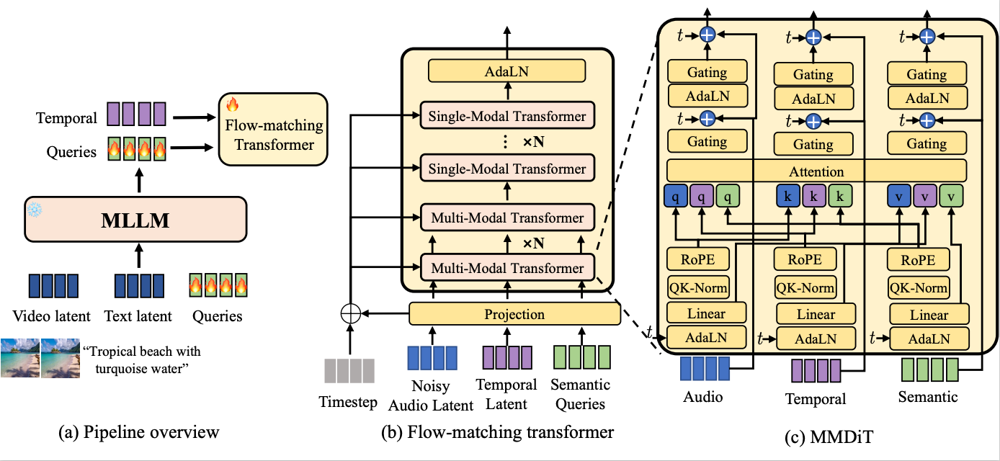

Anonymous Authors
Abstract. The rapid advancement of video-text-to-audio (VT2A) diffusion models has enabled unprecedented audio generation conditioned on video and text, yet two major challenges remain: following complex semantic descriptions and achieving robust audio–visual synchronization. In this work, we propose ReasonAudio, an MLLM-empowered flow-matching generative model with stronger semantic and robust temporal alignment. To enhance semantic understanding, we 1) address the scarcity of semantically rich tri-modal (video–text–audio) annotations by constructing VGGSound-Think, a dataset enriched with acoustic hints and audio–visual relation descriptions, and 2) leverage MLLMs to understand multimodal conditions (video and text) by introducing learnable queries that bridge understanding and generation components. To tackle temporal alignment, we employ preference optimization (Flow-DPO, Flow-RWR) with synchronization feedback, aligning generative models with visual synchrony preferences. Extensive experiments demonstrate that ReasonAudio achieves state-of-the-art performance in VT2A generation, with substantial improvements in both semantic alignment and temporal synchronization. Moreover, evaluations on VGGSound-Think show that our model excels at reasoning over acoustic hints and following descriptions of audio–visual relations (e.g., object interactions and on-/off-screen attribution).

| Text | Diff-foley | ThinkSound | MMAudio | Frieren | V2A-Mapper | ReasonAudio | ReasonAudio (Large) |
|---|---|---|---|---|---|---|---|